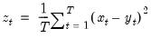

@mse Basic Statistics Mean of square error (difference) of two series. Computes the mean of the squared difference between x and y. Syntax: @mse(x, y, [s]) x: series y: series s: (optional) sample string or object Return: number  EViews will use the current or specified workfile sample. Examples Let yf denote in-sample forecasts for the series y. Then = @mse(yf, y) returns the MSE between the series y and its forecast. Cross-references See also @mae, @mape, @rmse, @smape, and @theil.